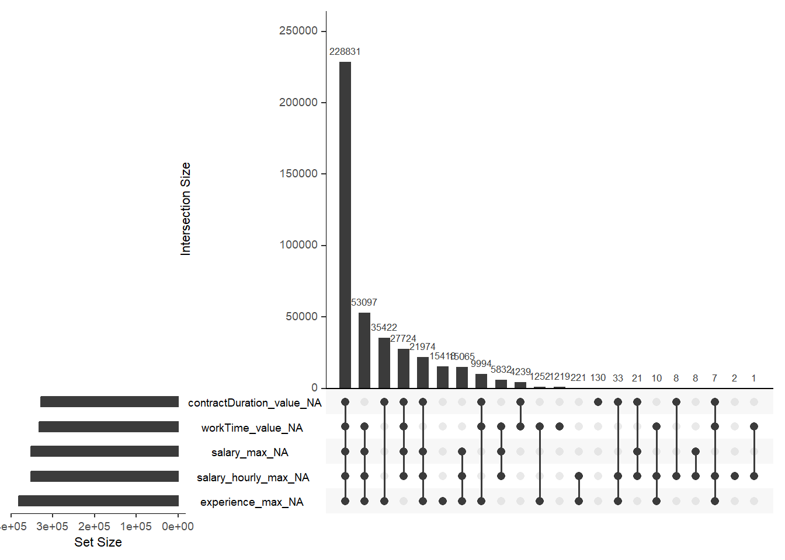
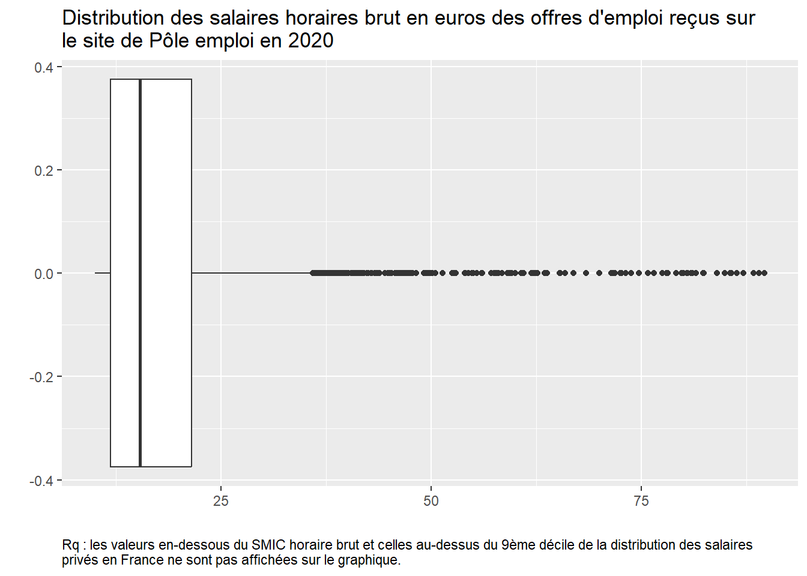

Dans la manipulation des variables, l’une des premières choses à réaliser est de les définir dans le bon format, variables quantitatives/continues ou variables qualitatives/catégorielles.
On l’a vu dans la section précédente, certaines variables sont encore codées comme des nombres entiers (“integer”) alors que ce sont des variables catégorielles. On va donc corriger cela en regardant d’abord quelles variables sont concernées, en les sélectionnant avec select_if() ou select(where()) :
A part les variables d’âge AGED et AGEREV, de date de naissance ANAI et de pondération IPONDI, toutes les autres variables devraient en format “factor”. Deux façons de les transformer, soit vous changer les variables une à une en utilisant les fonctions mutate() et as.factor() ; soit vous créer une liste avec le nom des variables dont le format doit être transformer et vous utilisez la fonction lapply() en l’appliquant à cette liste de variables :
On peut ensuite vérifier que ces variables sont bien des variables facteurs en regardant combien de modalités elles ont et quelles sont-elles. Par exemple, pour la variable CATPC :
nlevels(RP_final$CATPC)
[1] 3
levels(RP_final$CATPC)
[1] "0" "1" "2"
Si nous n’avions pas mis l’option transformant les variables caractères en variables facteurs lors du chargement des données, nous pourrions le faire maintenant en utilisant la fonction mutate_if ou la combinaison de mutate et across(where()) comme ceci RP %>% mutate_if(is.character, as.factor) ou RP %>% mutate(across(.cols = where(is.character), .fns = as.factor)).
On peut enfin vérifier quelles sont les variables numériques qui restent :
Plus généralement, il est souvent d’usage d’utiliser la fonction summary() pour donner un aperçu de l’ensemble des variables, soit de leur distribution pour les variables quantitatives, soit de leur répartition par modalités pour les variables qualitatives ; la fonction permet également de nous donner l’information sur l’existence et le nombre de valeurs manquantes pour chaque variable.
Mais attention, le problème ici est que cela nous donne des fréquences non pondérées pour l’ensemble de nos variables qualitatives, donc qui n’ont finalement pas grand sens.
3.1 Manipulation des variables qualitatives
On peut d’abord travailler sur les variables qualitatives qui correspondent ici à l’essentiel de nos variables.
Comme on le sait, on peut regarder les différents niveaux pour chacune d’entre elles, avec la fonction levels(). Si on veut appliquer la fonction à l’ensemble de nos variables facteurs sans avoir donc à les indiquer une par une, on peut avoir recours à la fonction sapply() qui permet d’appliquer la fonction indiquée entre parenthèses (ici levels()) à tous les éléments de notre table de données.
# Pour info, ici cela s'écrirait : RP_final %>%select(where(is.factor)) %>%sapply(levels)# on peut même se passer de la sélection sur les variables :# RP %>% sapply(levels)
On peut ensuite vouloir retravailler les modalités de ces variables, car par exemple les modalités ne sont pas parlantes puisque nommées par des codes chiffres, ou parce que les modalités sont trop nombreuses et qu’on souhaiterait les rassembler pour une analyse ultérieure.
Par exemple, si l’on veut étudier la répartition de la population francilienne selon leur statut d’activité, on peut utiliser la variable TACT:
levels(RP_final$TACT)
[1] "11" "12" "21" "22" "23" "24" "25"
Mais le moins qu’on puisse dire c’est que les 7 modalités de cette variable ne sont pas parlantes, on peut donc recoder les modalités de cette variable dans une étape préalable DATA comme ici ; on pourra bien sûr enchaîner plus tard les lignes de codes et réaliser cette étape dans une même procédure avec le tableau ou le graphique représentant cette variable.
Commençons ici par l’étape DATA :
# On cherche à quoi correspondent les modalités chiffrées de cette variable# dans le fichier "meta"meta %>%filter(COD_VAR=="TACT") %>%select(COD_MOD, LIB_MOD)
COD_MOD
1 11
2 12
3 21
4 22
5 23
6 24
7 25
LIB_MOD
1 Actifs ayant un emploi, y compris sous apprentissage ou en stage rémunéré.
2 Chômeurs
3 Retraités ou préretraités
4 Élèves, étudiants, stagiaires non rémunéré de 14 ans ou plus
5 Moins de 14 ans
6 Femmes ou hommes au foyer
7 Autres inactifs
# On recode à partir de ces libellés, tout en regroupant certaines modalités# qui sont très spécifiques et nous intéressent moins :RP_final <- RP_final %>%mutate(TACT_moda =as.factor(case_when(TACT =="11"~"Actifs en emploi", TACT =="12"~"Chômeurs", TACT =="21"~"Retraités", TACT %in%c("22","23","24","25") ~"Autres inactifs")))levels(RP_final$TACT_moda)
[1] "Actifs en emploi" "Autres inactifs" "Chômeurs" "Retraités"
Si l’on veut changer l’ordre des modalités, qui s’afficheront comme ci-dessus dans un tableau ou un graphique, on peut utiliser la fonction fct_relevel() du package forcats (à installer avant puis à appeler avant de l’utiliser) :
[1] "Actifs en emploi" "Chômeurs" "Retraités" "Autres inactifs"
Plus largement, pour travailler sur des variables qualitatives en particulier lorsqu’elles sont en format facteur, le package forcats est très utile. Outre une fonction de transformation d’une variable caractère en facteur (as_factor() proche de la version de baseR as.factor() utilisée en début de section), elle contient plein d’autres fonctions : fct_collapse() utilisée pour renommer ou regrouper des modalités d’une variable (au lieu de la double fonction as.factor() et case_when()) ; fct_relevel() utilisée également au-dessus pour trier les modalités comme on le souhaite ; fct_drop() pour enlever des niveaux de facteurs vides/sans effectifs ; fct_explicit_na() pour rendre les NA explicites en créant une modalité “(missing)” ; fct_reorder() et fct_reorder2() pour réordonner les modalités d’une variable, très utile pour les graphiques car utilisables directement dans ggplot() ; fct_lump() pour regrouper les modalités les plus communes (ou au contraire les moins communes) en lui indiquant entre parenthèses le nombre n= de modalités souhaitées ou la proportion minimum souhaitée prop=, et en sélectionnant la variable avec la fonction pull() avant car elle doit être en format vecteur et non data.frame ; ou encore fct_recode() pour changer le niveau des facteurs ; fct_other() ; fct_infreq() et fct_inorder() ; etc. Un bon récapitulatif de ces fonctions est présenté ici.
3.2 Manipulation des variables quantitatives
Comme nous l’avons vu plus haut, il y a peu de variables quantitatives dans cette base et l’une d’entre elles est la pondération, donc on va regarder plus précisément la variable AGED. Cependant, celle-ci aussi est particulière car c’est une variable numérique constituée d’entiers naturels (et non de valeurs réelles) qui vont de 0 à 120 ; dans le fichier des métadonnées (ou le dictionnaire des variables disponible également sur le site de l’Insee), on se rend compte que la variable a été pensée comme catégorielle avec des modalités d’abord codées comme “000”, “001”, etc.
meta %>%filter(COD_VAR=="AGED") %>%select(COD_MOD, LIB_MOD) %>%tail()
COD_MOD LIB_MOD
116 115 115 ans
117 116 116 ans
118 117 117 ans
119 118 118 ans
120 119 119 ans
121 120 120 ans
On peut alors regarder rapidement la distribution de cette variable.
summary(RP_final$AGED)
Min. 1st Qu. Median Mean 3rd Qu. Max.
0.00 21.00 36.00 38.44 55.00 120.00
On peut aussi construire des variables continues en agrégeant certaines informations au niveau des communes par exemple. Reprenons la variable d’activité dont nous avons recoder et regrouper les modalités et calculons-là pour avoir le nombre de chaque modalité par commune. Il faut pour cela créer la variable de commune, qu’on appelera COM, à partir de l’IRIS :
On va ensuite sommer chaque modalité de la variable TACT_moda en utilisant la pondération en groupant par commune.
EXERCICE :
Créer donc un tableau qui aura 3 colonnes COM, TACT_moda et n. Vous pouvez utiliser les fonctions group_by suivi soit de count, soit de summarise ; on cherchera finalement à arrondir ces valeurs à l’unité avec la fonction round(). Vous devez obtenir le tableau suivant :
On voit qu’on a un tableau dans un format “long” puisqu’il y a plusieurs observations pour une seule commune. On va utiliser la fonction pivot_wider() mentionnée précédemment pour n’avoir qu’une ligne par commune et en colonne les types de statut avec leur nombre respectif.
3.2.1 Détecter et “visualiser” les valeurs manquantes
Pour travailler sur les valeurs manquantes et valeurs aberrantes de variables quantitatives, on va s’appuyer sur une autre base de données, plus pertinente pour cela. Vous la trouverez sur l’espace de cours sur Moodle : il s’agit d’une extraction de la base de données JOCAS de la Dares (cf. ici) qui compile les offres d’emploi de l’année 2020 à partir de laquelle nous avons sélectionné les offres provenant de Pôle emploi (nouvellement France Travail) pour les communes de Paris et sa petite couronne.
Une fois copiée dans le dossier “data/” du projet R, ouvrons cette base de données et commençons l’exploration de ses variables et de leurs valeurs manquantes :
Dessinateur / Dessinatrice d'exécution du BTP (H/F)
F1104
9
CDI
NA
NA
NA
35H
FULL_TIME_INFER
35
PUTEAUX
92800
92
28000
32000
YEAR
18.67
18.67
17.43
19.92
Human Talent
NA
FALSE
1
NA
[]
2020-01-01
Thu Jan 02 14:06:14 2020
2020-01-01
Secrétaire juridique (H/F)
M1607
9
CDI
NA
NA
NA
35H
FULL_TIME_INFER
35
ISSY LES MOULINEAUX
92130
92
30000
42000
YEAR
22.41
22.41
18.67
26.14
ProJob Carrières
NA
FALSE
3
NA
['Bac+2 ou équivalents']
2020-01-01
Thu Jan 02 14:06:15 2020
2020-01-01
Garde d'enfant à domicile (H/F)
K1303
NA
CDD
9
9
MONTH
195
NA
PARIS 10
75010
75
NA
NA
NA
NA
NA
NA
Particulier Employeur
97
T
FALSE
0
NA
[]
2020-01-01
Thu Jan 02 14:06:15 2020
2020-01-01
Baby-sitter (H/F)
K1303
NA
CDD
2
2
MONTH
43
NA
PARIS 17
75017
75
NA
NA
NA
NA
NA
NA
Particulier Employeur
97
T
FALSE
0
NA
[]
2020-01-01
Thu Jan 02 14:06:15 2020
2020-01-01
Baby-sitter (H/F)
K1303
NA
CDD
8
8
MONTH
173
NA
JOINVILLE LE PONT
94340
94
NA
NA
NA
NA
NA
NA
Particulier Employeur
97
T
FALSE
0
NA
[]
summary(OffresPE_2020)
date_firstSeenDay date_scraping date_sitePublicationDay
Min. :2020-01-01 Length:420523 Min. :2020-01-01
1st Qu.:2020-03-09 Class :character 1st Qu.:2020-03-09
Median :2020-06-29 Mode :character Median :2020-06-29
Mean :2020-06-18 Mean :2020-06-18
3rd Qu.:2020-09-16 3rd Qu.:2020-09-16
Max. :2020-12-31 Max. :2020-12-31
job_title job_ROME_code job_qualification contractType
Length:420523 Length:420523 Min. :1.00 Length:420523
Class :character Class :character 1st Qu.:6.00 Class :character
Mode :character Mode :character Median :7.00 Mode :character
Mean :6.78
3rd Qu.:8.00
Max. :9.00
NA's :305296
contractDuration_min contractDuration_max contractDuration_period
Min. : 1.0 Min. : 1.0 Length:420523
1st Qu.: 3.0 1st Qu.: 3.0 Class :character
Median : 6.0 Median : 6.0 Mode :character
Mean : 8.5 Mean : 8.5
3rd Qu.:10.0 3rd Qu.:10.0
Max. :99.0 Max. :99.0
NA's :328334 NA's :328334
contractDuration_value workTime_hours workTime_category workTime_value
Min. : 1.0 Length:420523 Length:420523 Min. : 1.0
1st Qu.: 65.0 Class :character Class :character 1st Qu.:35.0
Median : 130.0 Mode :character Mode :character Median :35.0
Mean : 147.6 Mean :31.3
3rd Qu.: 195.0 3rd Qu.:35.0
Max. :20656.0 Max. :56.0
NA's :328383 NA's :332206
location_label location_zipcode location_departement salary_min
Length:420523 Min. :75000 Length:420523 Min. : 3
Class :character 1st Qu.:75006 Class :character 1st Qu.: 1550
Mode :character Median :92150 Mode :character Median : 2165
Mean :86066 Mean : 14480
3rd Qu.:93120 3rd Qu.: 30000
Max. :95926 Max. :500000
NA's :68798 NA's :319455
salary_max salary_period salary_value salary_hourly_mean
Min. : 7 Length:420523 Min. : 0.2 Min. : 0.2
1st Qu.: 2000 Class :character 1st Qu.: 11.5 1st Qu.: 11.6
Median : 3700 Mode :character Median : 14.8 Median : 15.0
Mean : 21255 Mean : 20.1 Mean : 20.1
3rd Qu.: 39000 3rd Qu.: 21.0 3rd Qu.: 21.2
Max. :500000 Max. :40200.0 Max. :40200.0
NA's :352552 NA's :319923 NA's :319923
salary_hourly_min salary_hourly_max entreprise_nom entrepriseSecteur_NAF88
Min. : 0.1 Min. : 0.2 Length:420523 Min. : 1.00
1st Qu.: 11.1 1st Qu.: 13.7 Class :character 1st Qu.:70.00
Median : 13.9 Median : 17.8 Mode :character Median :78.00
Mean : 18.1 Mean : 24.4 Mean :74.44
3rd Qu.: 19.8 3rd Qu.: 24.9 3rd Qu.:85.00
Max. :39600.0 Max. :40800.0 Max. :99.00
NA's :319923 NA's :352834 NA's :285597
entrepriseSecteur_NAF21 teleworking_mentioned experience_min
Length:420523 Mode :logical Min. : 0.000
Class :character FALSE:417778 1st Qu.: 0.000
Mode :character TRUE :2745 Median : 0.000
Mean : 1.137
3rd Qu.: 2.000
Max. :35.000
NA's :316
experience_max education_level
Min. : 0.2 Length:420523
1st Qu.: 2.0 Class :character
Median : 5.0 Mode :character
Mean : 4.5
3rd Qu.: 5.0
Max. :99.0
NA's :381324
Avec le head(), on remarque néanmoins que certaines variables ont des cellules vides (sans valeur ni ‘NA’), ce sont également des valeurs manquantes, c’est par exemple le cas pour la variable ‘contractDuration_period’, nous verrons après si les packages gérant les valeurs manquantes détectent également ces cellules vides.
La fonction summary() permet donc de donner une première information sur les valeurs manquantes des différentes variables. Pour se concentrer sur cette seule information, on peut compter le nombre de valeurs manquantes NA pour chacune des variables avec la fonction colSums() ; pour les avoir en proportion du nombre total d’observations (lignes), on peut utiliser la fonction colMeans() ; sinon, on peut utiliser la fonction summarise combinée avec across(where()), ) si l’on veut sélectionner uniquement les variables numériques et leur appliquer la fonction sommant les NA :
# Pour les avoir en proportion par rapport au nombre total d'observations# et arrondies à 2 chiffres après la virgule :round(colMeans(is.na(OffresPE_2020)*100), 2)
# Ou en langage tidyverse sur les seules variables numériques :OffresPE_2020 %>%summarise(across(.cols =where(is.numeric), .fns =~sum(is.na(.)))) %>%gt()
job_qualification
contractDuration_min
contractDuration_max
contractDuration_value
workTime_value
location_zipcode
salary_min
salary_max
salary_value
salary_hourly_mean
salary_hourly_min
salary_hourly_max
entrepriseSecteur_NAF88
experience_min
experience_max
305296
328334
328334
328383
332206
68798
319455
352552
319923
319923
319923
352834
285597
316
381324
On remarque que sur 31 variables, 14 ont des valeurs manquantes NA. Pour certaines d’entre elles, il y a beaucoup de valeurs manquantes (job_qualification, contratDuration_min, contratDuration_max, contractDuration_value, workTime_value, salary_min, salary_max, salary_value, salary_hourly_mean, salary_hourly_min, salary_hourly_max, entrepriseSecteur_NAF88, experience_max), et pour d’autres un peu moins (location_zipcode, experience_min). En proportion, on se rend compte que pour les premières variables citées, les valeurs manquantes sont présentes pour plus des 3/4 des observations, cela posera forcément des problèmes pour l’analyse !
Pour en faire une analyse plus poussée, différents packages existent pour détecter et visualiser ces données manquantes. L’un d’entre eux est le package naniar : quelques fonctions permettent d’abord de décrire la base selon ses valeurs manquantes. Cela donne un aperçu global et rapide, mais cela n’est vraiment pas suffisant pour comprendre l’origine et les enjeux (possibles problèmes) de ces valeurs manquantes.
library(naniar)# Ci-dessous : nombre de cellules du tableau ou de n_ij d'une matrice # qui correspondent à des valeurs manquantes :n_miss(OffresPE_2020)
[1] 4343198
# Pour les avoir en proportion du nombre total de cellules du tableau# et non des seules lignes comme précédemment, # le résultat est déjà en pourcentage, sinon utiliser `prop_miss(RP)`)pct_miss(OffresPE_2020)
[1] 33.31641
# Ci-dessous : nombre de cellules du tableau ou de n_ij d'une matrice # qui correspondent à des valeurs renseignées :n_complete(OffresPE_2020)
[1] 8693015
#en proportionpct_complete(OffresPE_2020)
[1] 66.68359
On peut ensuite visualiser le nombre de valeurs manquantes par variable, avec la fonction gg_miss_var() du même package. On peut également demander dans gg_miss_var() à ce que les valeurs soient en pourcentage, avec l’argument show_pct=TRUE.
# 1er type de visualisation des valeurs manquantesOffresPE_2020 %>%gg_miss_var(show_pct=FALSE)
Le problème est que pour la variable dont on avait vu qu’elle avait des valeurs vides - contractDuration_period -, ce graphique donne l’impression qu’elle n’a pas de valeurs manquantes. Cela est probablement dû au moment de l’importation des fichiers journaliers de l’ensemble de l’année 2020 et pour les variables caractères, les cellules vides ne sont pas automatiquement remplacées par des “NA” (sauf à mettre l’argument na.strings = c("", "NA") dans une fonction read.csv()). Il faut donc pour les variables de type “character” remplacer les celulles vides par des NA, on utilise pour cela la fonction na_if() qui va remplacer pour l’ensemble des variables les valeurs vides "" par des Na.
On remarque qu’il y a davantage de variables avec des valeurs manquantes.
On peut aussi réaliser des graphiques montrant le nombre de valeurs manquantes pour l’ensemble des variables numériques de la base, en fonction d’une autre variable (y compris de nature ‘factor’), avec l’argument fct= dans gg_miss_fct(). Cela est intéressant pour voir si certaines valeurs manquantes des variables sont liées à des valeurs observées d’autres variables, qu’elles soient quantitatives ou qualitatives (et dans ce cas, est-ce que les valeurs manquantes se retrouvent davantage dans certaines modalités plus que d’autres ?). Par exemple, ici, selon le contrat de travail en rassemblant quelques modalités avant :
# on filtre sur les variables numériques car on ne veut pas que la sortie nous affiche # toutes les variables.OffresPE_2020 %>%select(where(is.numeric), contractType) %>%mutate(contractType=as.factor(case_when(contractType=="MIS"~"Intérim", contractType %in%c("CDS","SAI","TTI", "DDI") ~"Autres CDD", contractType %in%c("CCE", "REP", "DIN") ~"Autres",TRUE~ contractType))) %>%gg_miss_fct(fct = contractType)
On voit que les valeurs manquantes sont très nombreuses pour certaines modalités de la variable de contrat comme “Franchise” et “Indépendant”. Cela varie ensuite selon les variables, par exemple pour la modalité “CDD” il n’y a aucune valeur manquante pour les variables de durée des contrats mais davantage pour celles sur les salaires. On voit bien que cela peut être logique : on doit donner la durée du contrat pour un CDD mais pas pour un CDI ni un indépendant… Les valeurs manquantes peuvent donc avoir un sens. Ainsi, les valeurs manquantes ne se distribuent pas de manière uniforme selon la variable de contrat de travail, parfois avec une raison, parfois non.
Ensuite, la fonction gg_miss_upset() de ce même package naniar permet de visualiser des dépendances entre, cette fois, les valeurs manquantes des variables :
Warning: `aes_string()` was deprecated in ggplot2 3.0.0.
ℹ Please use tidy evaluation idioms with `aes()`.
ℹ See also `vignette("ggplot2-in-packages")` for more information.
ℹ The deprecated feature was likely used in the UpSetR package.
Please report the issue to the authors.
Warning: Using `size` aesthetic for lines was deprecated in ggplot2 3.4.0.
ℹ Please use `linewidth` instead.
ℹ The deprecated feature was likely used in the UpSetR package.
Please report the issue to the authors.
Warning: The `size` argument of `element_line()` is deprecated as of ggplot2 3.4.0.
ℹ Please use the `linewidth` argument instead.
ℹ The deprecated feature was likely used in the UpSetR package.
Please report the issue to the authors.

Cela nous montre qu’il y a beaucoup d’observations où on a des valeurs manquantes pour 5 variables indiquées, qu’ensuite le cas le plus probable c’est des valeurs manquantes pour 4 de ces 5 variables, etc.
Enfin, il est possible d’appliquer la fonction geom_miss_point() à une fonction ggplot, dans ce cas les valeurs manquantes de la ou des variables sont remplacées par des valeurs 10% plus basses que la valeur minimum observée des variables, et cela afin de les visualiser.
Il existe bien sûr bien d’autres packages, comme funModeling, Amelia et sa fonction missmap(), ou encore visdat et sa fonction vis_miss(). Enfin, d’autres packages comme VIM ou MICE permettent, non seulement de visualiser ces valeurs manquantes, mais également de leur appliquer des techniques pour les “gérer”, c’est ce que l’on va voir maintenant en résumé.
3.2.2 Gérer les valeurs manquantes
Il est bien de connaître le nombre et la proportion de valeurs manquantes dans nos données, comment ces dernières se répartissent entre elles, etc., mais il faut aussi comprendre quel impact elles peuvent avoir sur des analyses statistiques, de régressions ou autres algorithmes.
Dans une base de données tirée d’une enquête, les valeurs manquantes peuvent provenir d’une non-réponse de la part de l’enquêté (que ce soit un individu ou une entreprise), cette non-réponse pouvant être “totale” (on a aucune donnée pour cet enquêté alors qu’il fait partie de l’échantillon) ou “partielle” (on a une partie des réponses mais pas à toutes les questions et donc des variables parfois avec des valeurs manquantes) ; ou bien encore elles peuvent être dues à une mauvaise saisie de l’information par l’enquêteur. La pondération, si elle est présente dans une enquête, peut permettre de corriger cette non-réponse totale, voire partielle.
Les conséquences des valeurs manquantes dans une base de données dépendent de plusieurs choses : on doit d’abord se demander si l’information perdue aurait été pertinente et/ou aurait apporté un élément particulier/supplémentaire. Ensuite, la perte éventuelle d’information est-elle importante, en nombre/en proportion. Et enfin (et surtout), peut-elle créer un biais lors de l’estimation et de la précision du phénomène que l’on souhaite observer, décrire, analyser, etc. Selon l’importance de ces conséquences, il faut traiter ces valeurs manquantes, c’est-à-dire utiliser une procédure la plus adaptée possible selon le potentiel biais repéré.
Traditionnellement dans la littérature, on distingue 3 types de valeurs manquantes :
valeur manquante entièrement due au hasard (‘MCAR’ pour Missing completely at random) : il n’y a pas de lien entre la valeur manquante pour une variable donnée et les autres variables, dit autrement la probabilité pour une variable qu’elle ait une valeur manquante est constante dans les données, elle ne diffère pas selon d’autres caractéristiques des individus ;
valeur manquante due au hasard (‘MAR’ pour Missing at random) : il y a un lien entre la valeur manquante pour une variable donnée et les valeurs observées d’autres variables, c’est-à-dire que la probabilité pour une variable qu’elle ait une valeur manquante dépend d’autres variables (de leurs valeurs observées), elle ne sera donc pas la même selon les individus, c’est ce qu’on essayait de regarder lorsqu’on a utilisé plus haut la fonction gg_miss_fct(fct=) ;
valeur ne manquant pas au hasard (‘NMAR’ pour Non missing at random) : il y a un lien entre la valeur manquante pour une variable et les valeurs manquantes/non observées d’autres variables. Ce sont celles qui risquent d’entraîner des biais importants si on ne les traite pas, c’est ce qu’on essayait de regarder plus haut également avec la fonction gg_miss_upset() cette fois.
Comment alors les gérer ? En pratique, il est d’usage lorsque la proportion de valeurs manquantes ne dépasse pas 5% des données de ne rien faire de particulier ou simplement de les supprimer (vous pouvez pour la savoir utiliser les premières fonctions du package naniar présentées précédemment). Sinon, on essaye d’appliquer plusieurs méthodes, simples ou plus complexes.
Dans le cas de valeurs manquantes entièrement dues au hasard (MCAR) et/ou d’une faible proportion des valeurs manquantes dans le total de la table de données, on peut décider de supprimer toutes les lignes qui contiennent au moins une valeur manquante, afin d’avoir une table de données complètes, on peut utiliser la fonction na.omit() ou complete.cases() ; attention à ne pas remplacer votre table de données initiale en réalisant cette procédure. On ne va pas s’essayer à le faire ici car on a vu au tout début de cette section que pour certaines variables cela concernait beaucoup d’observations (comme le salaire ou la durée du contrat pour les CDI), la conséquence c’est qu’ici on va supprimer toutes les lignes car une ligne a forcément une valeur manquante dans une des variables. Le code serait celui-ci :
OffresPE_2020_sansNA <-na.omit(OffresPE_2020)# OU : # OffresPE_2020_sansNA <- OffresPE_2020[complete.cases(OffresPE_2020), ]
Des techniques d’imputation simple peuvent également être utilisées. On peut par exemple remplacer les valeurs manquantes d’une variable quantitative par sa moyenne ou sa médiane, pour cela on peut utiliser la fonction replace_na() du package tidyr, ou impute() du package Hmisc, ou encore na.aggregate() du package zoo On donne ainsi une valeur “artificielle” pour remplacer la valeur manquante. Dans le cas de variables qualitatives, on peut, de même, imputer la modalité dominante (avec la fonction mode() du package Hmisc ; ou avec l’argument mode= du package zoo). Par exemple, voici les codes pour remplacer les valeurs manquantes de la variable ‘salary_value’ par sa médiane (la base n’étant pas propre il vaut mieux utiliser la médiane que la moyenne) :
On peut néanmoins réaliser ce type d’imputation simple de manière un petit peu plus subtile. Par exemple, si la moyenne de la variable diffère sensiblement selon une autre variable (catégorielle), dans ce cas, on va plutôt remplacer les valeurs manquantes de la variable selon la moyenne associée à chaque modalité de cette autre variable en ajoutant un group_by() avant la fonction mutate() si on utilise la fonction replace_na() comme dans l’exemple précédent.
Si on ne veut pas supprimer ces lignes d’observations et perdre ainsi d’autres informations (celles des variables pour lesquelles la valeur était renseignée pour cette même observation), on peut simplement créer une variable indicatrice de valeur manquante, remplacer les NA par ‘999’ pour des variables quantitatives, ou par une modalité ‘Manquant’ ou ‘Missing’ pour des variables qualitatives.
Plusieurs autres méthodes existent également dans le cas de valeurs manquantes dues au hasard (MAR), en voici la liste pour information et sans prétention d’exhaustivité : - analyse pondérée pour des valeurs MAR qui consiste à calculer la probabilité qu’une observation soit complète et ensuite à affecter à chacune des observations complètes, un poids inversement proportionnel à cette probabilité ; - imputation de la dernière observation pour des données temporelles ; - imputation “hot-deck” qui consiste à remplacer la valeur manquante par une valeur observée chez un autre individu ayant les mêmes caractéristiques, ou “cold-deck” (même démarche que précédement, sauf que la valeur imputée vient d’une autre source) ; - imputation par le “plus proche voisin” en utilisant une fonction de distance basée sur plusieurs autres variables/caractéristiques de l’individu ; - imputation par un modèle de régression où l’on va remplacer la valeur manquante par une valeur prédite obtenue par régression sur données complètes de la variable comportant des valeurs manquantes.
Il y a aussi des techniques plus complextes d’imputation multiple qui consiste à créer plusieurs valeurs possibles pour une valeur manquante d’une variable, cela peut être adaptée là aussi lorsque les valeurs manquantes sont dues au hasard (MAR).
Vous trouverez de multiples ressources sur internet dans des ouvrages libres d’accès, ou vous pouvez aller voir un des chapitres de l’ouvrage principal support du cours (Husson, 2018), avec des exemples d’utilisation.
3.2.3 Détecter et “visualiser” les valeurs aberrantes
On va continuer avec cette base de données en s’intéressant maintenant aux valeurs aberrantes.
On peut d’abord étudier la distribution de ces variables : la fonction get_summary_stats() du package rstatix permet de donner les statistiques de distribution des variables. On propose d’afficher ici les variables de salaire, d’expérience minimum, de durée des contrat et de temps de travail, pour les seuls CDD et CDI pour que cela soit plus pertinent.
library(rstatix)# Au total : 65 449 CDD ; 315 063 CDI# 'contractDuration_value' : exprimée en jours# 'experience_min' : nombre minimum d’années d’expérience nécessaire pour le# poste (0 s’il est précisé que les personnes sans expérience sont acceptées).# 'salary_hourly_mean' : salaire horaire, moyen si min et max proposé, et recalculé# selon la plage temporelle dans laquelle le salaire est exprimé.# 'workTime_value' : temps de travail exprimé en heuresOffresPE_2020 %>%filter(contractType %in%c("CDD", "CDI")) %>%group_by(contractType) %>%get_summary_stats(salary_value, salary_min, salary_hourly_mean, experience_min, contractDuration_value, workTime_value,show=c("n","mean", "median", "min", "max","q1", "q3")) %>%gt()
contractType
variable
n
mean
median
min
max
q1
q3
CDD
salary_value
19920
14.798
12.43
0.31
1540
10.44
16.48
CDD
salary_min
20229
6399.724
1600.00
3.00
288000
20.00
2130.00
CDD
salary_hourly_mean
19920
14.412
12.31
0.31
1540
10.35
16.18
CDD
experience_min
65416
0.561
0.00
0.00
20
0.00
1.00
CDD
contractDuration_value
65283
163.510
130.00
1.00
20656
108.00
217.00
CDD
workTime_value
22702
26.393
35.00
1.00
50
14.00
35.00
CDI
salary_value
70438
21.059
16.15
0.16
40200
11.87
23.03
CDI
salary_min
70582
17120.800
3000.00
3.00
350000
1700.00
32000.00
CDI
salary_hourly_mean
70438
21.189
16.48
0.16
40200
12.19
23.34
CDI
experience_min
314781
1.268
1.00
0.00
35
0.00
2.00
CDI
workTime_value
57335
32.703
35.00
1.00
56
35.00
35.00
Cela nous permet de comprendre qu’il y a probablement encore quelques filtres à effectuer pour avoir une base propre et cohérente, non seulement sur les valeurs maximum - on va y venir - mais aussi sur les valeurs minimum. Peut-on ainsi avoir un salaire brut horaire proposé de 0,16€ (minimum) ou de 40200€ (maximum) dans les offres d’emploi en CDI ? De plus, comme on a vu qu’il y avait beaucoup de valeurs manquantes sur les variables de salaire ou de temps de travail, il faudra indiquer que ces valeurs ne sont pas nécessairement représentatives de l’ensemble des offres de Pôle emploi.
On peut également faire quelques graphiques sur ces variables pour mieux visualiser ces valeurs aberrantes, par exemple un histogramme, ou une “boîte à moustache” (seule ou en relation avec une autre variable) :
Warning: Removed 319923 rows containing non-finite outside the scale range
(`stat_boxplot()`).
On voit bien des points aberrants qui “écrasent” les représentations graphiques, que ce soit avec l’histogramme ou la boîte à moustâche, de telle sorte qu’on ne voit même pas la distribution, en particulier dans le Boxplot la “boîte” en elle-même.
Pour rappel, dans un boxplot, par défaut un point est affiché comme aberrant s’il est en dehors de l’intervalle suivant : \(I=[Q_{1}−1.5×IQR ; Q_{3}+1.5×IQR]\), IQR étant l’intervalle interquartile donc la différence entre Q1 et Q3.
Mais s’agit-il de “vraies” valeurs aberrantes ? Combien d’observations concernent-elles ? La fonction boxplot.stats() permet de récupérer les valeurs des observations indiquées comme aberrantes, comme cela on peut créer ensuite une variable indiquant si oui ou non l’observation a une valeur “aberrante”. Faisons-cela pour la variable de salaire horaire (brut) moyen.
# On récupère les valeurs de la partie 'out' des sorties de la fonction# 'boxplot.stats', qui correspondent aux valeurs de tout point de données# qui se situe au-delà des extrêmes de la boxplotval_outliers <-boxplot.stats(OffresPE_2020$salary_hourly_mean)$out # On crée une variable dans notre table d'"identification" de ces outliers avec# comme modalité "vraie" si l'observation a une valeur "outliers", sinon "Faux"# et en créant une modalité pour les valeurs manquantesOffresPE_2020 <- OffresPE_2020 %>%mutate(salary_outliers =case_when(is.na(salary_hourly_mean) ~"NA", salary_hourly_mean %in%c(val_outliers) ~"Vrai",TRUE~"Faux"))# Puis on regarde la répartition avec la fonction `tabyl()` du package `janitor()` library(janitor)OffresPE_2020 %>%tabyl(salary_outliers) %>%adorn_totals("row") %>%adorn_pct_formatting() %>%gt()
On y lit que pour cette variable lorsqu’elle est renseignée, il y aurait près de 3,3% de valeurs aberrantes telles qu’indiquées par le boxplot, ce qui correspondant à 3 367 observations, c’est beaucoup ! On peut regarder plus précisément à quelles observations elles correspondent, en sélectionnant avec la variable créée et en triant par ordre croissant ou décroissant.
On voit donc qu’il y a des valeurs considérées comme aberrantes en haut de la distribution, à partir d’un salaire brut horaire de 35,60€ (tri par odre croissant), les plus hauts salaires brut horaires étant de 40200€ ou 35000 (tri par ordre décroissant). Attention, un salaire brut horaire de 35,60€ correspond pour un temps plein (35H/semaine) à un salaire brut mensuel d’environ 4984€, est-ce vraiment une valeur aberrante ?! Pour être plus précis, on peut calculer les valeurs seuils bas et haut puisqu’on connaît la formule. Le seuil bas sera : -2.79 et le seuil haut : 35.53. Comme déjà dit, le seuil haut est vraisemblables en réalité, en revanche avoir un salaire brut horaire négatif ou proche de 0 n’est pas possible ! Il est donc important de comprendre ces valeurs aberrantes, cela peut parfois correspondre à des observations intéressantes à conserver, il ne s’agit pas juste de les identifier pour les exclure directement ensuite des analyses.
Il existe d’autres méthodes (méthode basée sur les percentiles ; méthode de Hampel), et d’autres tests : par exemple, le package outliers vous permet de tester si une valeur (max ou min) est bien une valeur aberrante avec la fonction grubbs.test() (attention bis : à utiliser avec grande précaution et beaucoup de parcimonie), ou avec le package EnvStats et la fonction rosnerTest() pour détecter plusieurs “outliers” à la fois.
Pour gérer ces variables aberrantes, on peut les supprimer bien sûr si l’on est sûr que la valeur de la variable n’est pas “normale”, par exemple comme ici quand la variable de salaire est inférieure ou égale à 0 (ou même inférieure au SMIC), oui dans ce cas ce sont des mauvais outliers (et d’ailleurs parfois ils peuvent même ne pas être identifiés comme tel statistiquement) et on peut les supprimer ; de même pour des variables de résultats économiques, on va souvent élaguer la distribution en retirant les 1% (par exemple) du bas et du haut de la distribution pour supprimer des potentiels outliers. On peut tenter cette méthode ici en filtrant les données avant de calculer la distribution de la variable.
Sinon, on les isole en créant une variable dichotomique “0/1” ou “Faux/Vrai” ; ou on crée une variable qualitative avec plusieurs catégories (cf. sous-section suivante).
Dans les graphiques, en particulier les boîtes à moustache, on peut les supprimer visuellement avec l’option outlier.shape = NA et mettre ensuite une échelle plus réduite (avec ylim=c( , )) pour que le graphique soit plus lisible, mais il faut alors bien préciser dans la légende que certaines valeurs ne sont pas visibles sur le graphique car retirées ; attention à ne pas les supprimer de la base sur laquelle est réalisée la boxplot car sinon cela va modifier les indicateurs (en particulier de moyenne mais pas seulement). Dans un histogramme, on peut de même jouer sur l’échelle.
OffresPE_2020 %>%ggplot() +aes(y = salary_hourly_mean) +geom_boxplot(outlier.shape =NA) +coord_flip(ylim =c(quantile(OffresPE_2020[!is.na(OffresPE_2020$salary_hourly_mean), ]$salary_hourly_mean, 0.01),quantile(OffresPE_2020[!is.na(OffresPE_2020$salary_hourly_mean), ]$salary_hourly_mean, 0.99))) +labs(title ="Distribution des salaires horaires brut en euros des offres d'emploi reçus sur \nle site de Pôle emploi en 2020", y="", x="", caption="Rq : les valeurs en-dessous du 1% de la distribution et celles au-dessus du 99% de la distribution ne sont pas \naffichées sur le graphique ; de même pour les valeurs considérées comme aberrantes selon la statistique du boxplot.") +theme(plot.caption =element_text(hjust=0))
Warning: Removed 319923 rows containing non-finite outside the scale range
(`stat_boxplot()`).
OffresPE_2020 %>%ggplot() +aes(salary_hourly_mean) +geom_histogram(bins=50000) +coord_cartesian(xlim=c(quantile(OffresPE_2020[!is.na(OffresPE_2020$salary_hourly_mean), ]$salary_hourly_mean, 0.01),quantile(OffresPE_2020[!is.na(OffresPE_2020$salary_hourly_mean), ]$salary_hourly_mean, 0.99))) +labs(title ="Distribution des salaires horaires brut en euros des offres d'emploi reçus sur \nle site de Pôle emploi en 2020", y="", x="Salaire horaire brut",caption="Rq : les valeurs en-dessous du 1% de la distribution et celles au-dessus du 99% de la distribution ne sont pas \naffichées sur le graphique.") +theme(plot.caption =element_text(hjust=0))
Warning: Removed 319923 rows containing non-finite outside the scale range
(`stat_bin()`).
C’est mieux mais on voit qu’il y a probablement encore un problème pour les valeurs faibles du salaire qu’il faudrait “nettoyer”. On peut refaire le graphique en élaguant davantage en bas de la distribution et en haut à partir de valeurs de salaire connus par exemple :
# On peut filtrer directement avec des valeurs de salaire horaire brut "connu" # (comme la valeur du SMIC ou la valeur du 9ème décile, cf. site de l'Insee)OffresPE_2020 %>%filter(salary_hourly_mean>=10& salary_hourly_mean<90) %>%ggplot() +aes(y = salary_hourly_mean) +geom_boxplot() +coord_flip() +labs(title ="Distribution des salaires horaires brut en euros des offres d'emploi reçus sur \nle site de Pôle emploi en 2020",y="", x="", caption="Rq : les valeurs en-dessous du SMIC horaire brut et celles au-dessus du 9ème décile de la distribution des salaires \nprivés en France ne sont pas affichées sur le graphique.") +theme(plot.caption =element_text(hjust=0))

OffresPE_2020 %>%filter(salary_hourly_mean>=10& salary_hourly_mean<90) %>%ggplot() +aes(salary_hourly_mean) +geom_histogram(bins=100) +labs(title ="Distribution des salaires horaires brut en euros des offres d'emploi reçus sur \nle site de Pôle emploi en 2020",y="", x="Salaire horaire brut",caption="Rq : les valeurs en-dessous du SMIC horaire brut et celles au-dessus du 9ème décile de la distribution des salaires \nprivés en France ne sont pas affichées sur le graphique.") +theme(plot.caption =element_text(hjust=0))
3.2.4 Découper une variable quantitative en classes
On peut enfin découper en classes une variable quantitative et en faire donc une variable qualitative. On utilise pour cela la fonction cut() du langage de base de R. On peut par exemple découper la variable selon les principaux indicateurs de la distribution.
# OffresPE_2020 %>% get_summary_stats(salary_hourly_mean)OffresPE_2020$salary_cat <-cut(OffresPE_2020$salary_hourly_mean,breaks =c(0,10, quantile(OffresPE_2020[!is.na(OffresPE_2020$salary_hourly_mean),]$salary_hourly_mean,0.25), mean(OffresPE_2020[!is.na(OffresPE_2020$salary_hourly_mean),]$salary_hourly_mean),90,max(OffresPE_2020[!is.na(OffresPE_2020$salary_hourly_mean),]$salary_hourly_mean)),labels=c("Entre 0 et moins que le SMIC (10€)","Entre le SMIC et le Q1(11,58€)","Entre le Q1 et la moyenne (20,07€)","Entre la moyenne et le D9 observée en France","Entre le D9 et le maximum (40200€)"))OffresPE_2020 %>%tabyl(salary_cat) %>%adorn_totals("row") %>%adorn_pct_formatting() %>%gt()
salary_cat
n
percent
valid_percent
Entre 0 et moins que le SMIC (10€)
3489
0.8%
3.5%
Entre le SMIC et le Q1(11,58€)
21668
5.2%
21.5%
Entre le Q1 et la moyenne (20,07€)
47138
11.2%
46.9%
Entre la moyenne et le D9 observée en France
27930
6.6%
27.8%
Entre le D9 et le maximum (40200€)
375
0.1%
0.4%
NA
319923
76.1%
-
Total
420523
100.0%
100.0%
On a une classe majoritaire (du Q1 à la moyenne), mais cela nous permet de distinguer 2 classes pour lesquelles le montant du salaire horaire brut est soit plutôt faible mais au-dessus du SMIC, soit plutôt élevé mais en-dessous de la valeur D9 observée en France.